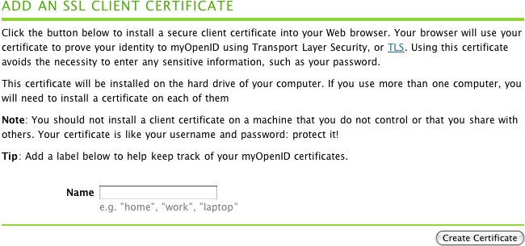

- Visit www.myopenid.com
- Click on the "SIGN IN TO YOUR ACCOUNT" button:

- Log in to your account.
- Click on the "Account Settings" link on the right side of the page:

- Click on the "Authentication Settings" link in the sub-menu that opens up:

- Scroll down to the "ADD AN SSL CLIENT CERTIFICATE" section of the "Authentication Settings" page.
- Enter something to identify your computer into the "Name" field. I like to use the type of computer and browser that I'm using as an identifier. For example: "pbwiki-firefox".
- Click on the "Create Certificate" button.

- What happens next depends on your browser. Firefox and IE seem to handle client side SSL certificate generation smoothly. If you are using Safari you'll have to follow the instructions and install the certificate that is generated for you.
- Once you've generated and imported a client side SSL certificate into your browser, you should be able to test it out by clicking on "Sign out" and then trying to log back in. You'll know if it works if you see a page like this when you try to sign back in:

- If you see a page like the one above, then it works! No more passwords!